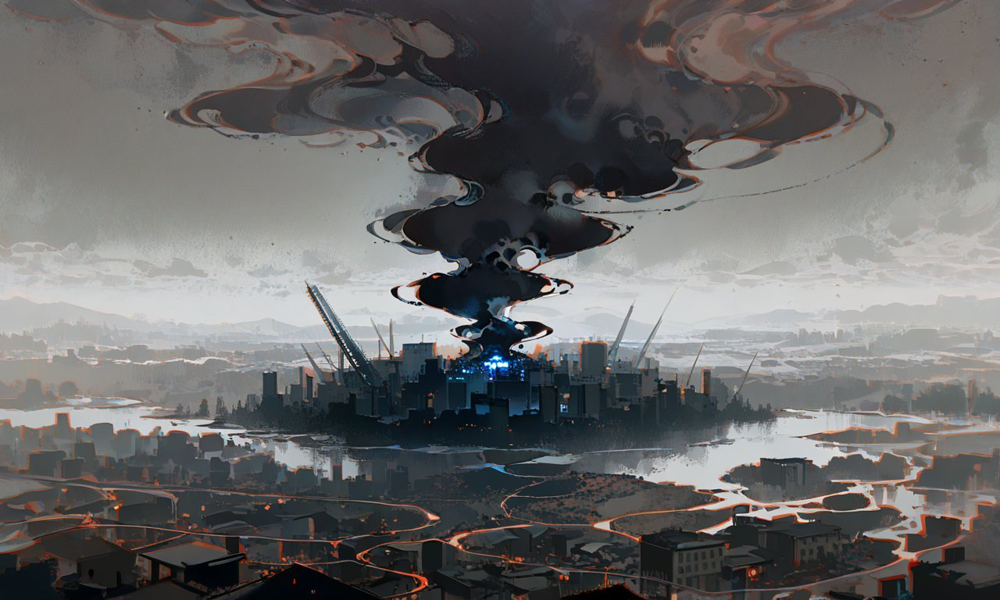

Donde el inconsciente se vuelve real
Sinopsis
Una joven queda atrapada en una versión distorsionada de su ciudad natal, donde la realidad se moldea a partir de lo reprimido. Los recuerdos se convierten en monstruos, los miedos toman forma y las personas que la rodean van cediendo ante la corrupción. Enfrentarse a ese mundo significará decidir si seguir fragmentándose… o aceptarse por completo.
Concepto
La ciudad existe en dos planos simultáneos: el consciente y el inconsciente colectivo. Siguiendo las teorías de Jung, lo reprimido no desaparece, sino que se acumula hasta volverse real. Cuando ambos planos se fusionan, la arquitectura se corrompe, los espacios se distorsionan y los habitantes pierden la razón. El pueblo no es solo el escenario; es el reflejo de todo aquello que nadie ha querido recordar.
Explorar másEl juego propone una exploración pausada y tensa. La prioridad nunca es el combate sino la huida, la observación y el descubrimiento. Cada zona —el barrio residencial, la casa familiar, el bosque, el hospital— esconde documentos, objetos y fragmentos de memoria que reconstruyen la verdad poco a poco. El teléfono de Alice actúa como guía críptica; sus mensajes se corrompen cuanto más profunda es la distorsión.
Explorar másLa cordura, la percepción, la concentración y la fuerza mental del personaje son valores que evolucionan según las decisiones del jugador. Una cordura baja distorsiona la imagen en pantalla y complica el movimiento. La mecánica de corrupción altera el entorno en tiempo real. Las elecciones de diálogo y el estado mental determinan qué zonas son accesibles y cuál de los tres finales se alcanzará.
Explorar másPersonajes
Gameplay
La cordura de Alice afecta la visión, el movimiento y las opciones disponibles. Cuanto más se corrompe el entorno, más difícil resulta distinguir lo real de lo imaginado.
Un móvil actúa como guía críptica durante toda la historia. En las zonas más distorsionadas, los mensajes llegan corruptos, con información incompleta o contradictoria.
Las decisiones a lo largo del juego determinan no solo el destino de Alice, sino de todo el pueblo